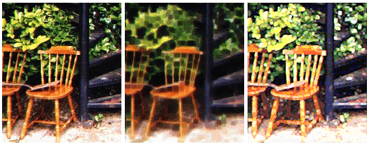

25 Aug 1999
25 Aug 1999
First Posted
 Image Processing Using DIB Sections
Image Processing Using DIB Sections
 Hue Luminance and Saturation (HLS) Model and Manipulating Colours
Hue Luminance and Saturation (HLS) Model and Manipulating Colours

Rank Filters
A summing filter which gives softening or impressionistic effects to images
This is a supporting note describing the Rank filter provided in the vbAccelerator Image Processor. Rank filters can either be linear, yielding a softening effect, or non-linear, giving an impressionistic effects to a images.
Performing a Rank Filter
A rank filter considers pixels surrounding the central pixel and then determines a new value for the pixel from a combination of these values. There are two variants to the effect:
- Linear Rank Filters
A linear rank filter yields a softening effect which is similar to the normal softening and blurring algorithms. To achieve this effect, simply calculate the average of each of the surrounding pixels to set the result. - Non-Linear Rank Filters
Non-linear rank filters are more interesting as they produce an impressionistic effect on an image. To get this effect, just calculate either the minimum or the maximum value of the surrounding pixels and use that as the result. Using the minimum values blurs sharp edges and tends to darken the image. Using the maximum value enhances highlights and brightens the image overall. In both cases the image gets a fascinating blurry-blocked effect which I rather like (not as much as a nicely dry gin Martini made from Tanqueray 10, though).
In Use
In the Image Processing sample, the rank filter takes a 3x3 average of the surrounding pixels to create the effect. You could modify the code for different effects by more pixels into account (to get larger 'patches' in the end result) or by using a non-square selection of surrounding pixels (to get a streaky kind of effect). Other ideas to try are applying combinations of linear and non-linear effects, using Hue Luminance and Saturation instead of RGB for the calculation or using another image entirely to perform the weighting.